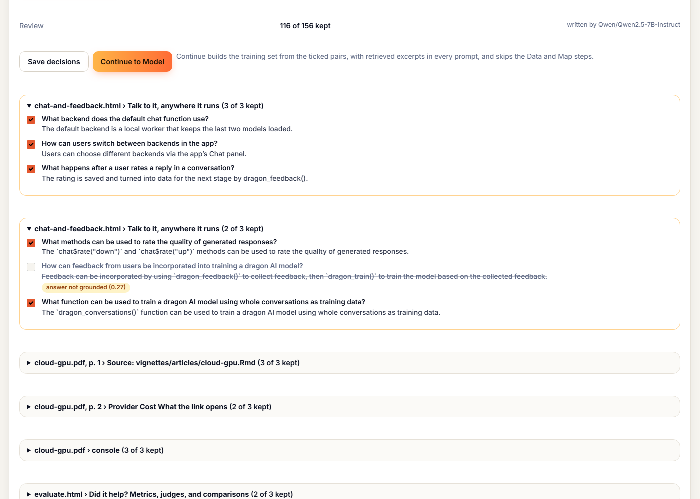
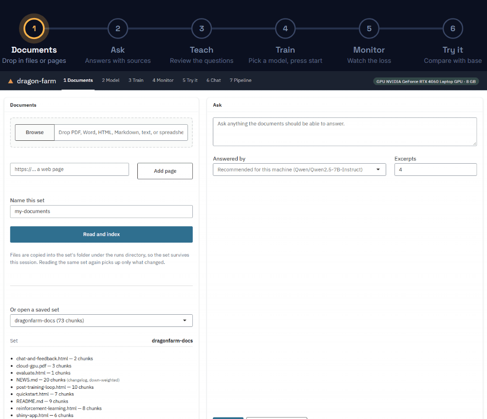

Fine-tune your own model from R, starting from your documents
Tejas Patel
16 October 2026
Source:vignettes/articles/introducing-0-4-0.Rmd
introducing-0-4-0.Rmddragonfarm 0.4.0 lets you fine-tune your own language model on your own documents, from R. It writes the training data for you, trains on the laptop you already have, and keeps every answer grounded in your documents. No Python, no cloud, no bill. Raise your own dragon.
The hard part is the training data
Fine-tuning needs examples: hundreds of questions with good answers. Most people don’t have those. They have documents.
So dragonfarm reads your documents and writes the practice questions and answers itself. You look through them, keep the good ones, and toss the rest. That review is the point: it is what stops a model from learning confident mistakes.

Trains on the laptop you have
- A 7B model fits an 8 GB laptop GPU, trained in 4-bit.
- Small models learn fast. Turning support tickets into JSON, even the smallest model scored 20 of 20 after under three minutes of training.
- No GPU? It sends the training to a free Colab or Kaggle GPU and brings the model home.
What you get back is yours: a model that runs on your machine and loads anywhere with standard tools. No subscription, no leash.
RAG built in, from the start
Before you train anything, dragonfarm already answers from your documents: it finds the most relevant passages and the model answers from them. I fed it Costco’s 2024 annual report, all 76 pages:
Who is Costco’s independent registered public accounting firm?
Costco’s independent registered public accounting firm is KPMG LLP, located in Seattle, WA.
What was net cash used in investing activities in fiscal 2024?
Net cash used in investing activities in fiscal 2024 totaled $4,409 million.
It got 12 of 13 questions right, and on the last one said the report does not cover it rather than making something up.
Training keeps that grounding: every practice question carries the passages it came from, so the model learns to answer from your documents, not to memorise them. That pays off when documents change. On support tickets, a model trained this way recalled 89 percent of the policy facts on tickets it had never seen, against 68 percent for ordinary fine-tuning, and when a policy was edited after training it followed the new version in 88 percent of answers. Old dragon, new tricks.
Six steps, one app

- Documents. Feed it PDFs, Word files, web pages, spreadsheets, or a whole folder.
- Ask. Full answers drawn from your documents, before any training.
- Teach. It writes practice questions; you keep the good ones.
- Train. It studies the pairs you kept.
- Monitor. Watch it learn.
- Try it. Put the trained dragon next to the wild one.
Your documents never leave your machine. Everything the app does is also an R function, for when you want a script.
How big a dragon do you need?
The same questions, the same documents, four sizes, one 8 GB laptop GPU, answering with RAG before any training:
| Dragon | Annual report: right of 23 | R manuals: right of 32 | Said “not covered” when true, of 20 |
|---|---|---|---|
| Hatchling (0.5B) | 17 | 19 | 16 |
| Drake (1.5B) | 19 | 28 | 20 |
| Wyvern (3B) | 21 | 30 | 20 |
| Elder (7B) | 23 | 32 | 20 |
For open questions, bigger is better. For a fixed job like extraction or a house style, the small ones match the big ones and train in minutes. The details are in Choosing a model size.
Where dragons fear to tread
- Questions that need every row of a spreadsheet (“which year had the highest margin?”) are better answered in R, on the data.
- Scanned pages need OCR first, and numbers inside charts are lost.
- Small dragons trained on a few hundred examples can get cocky. Review the practice questions, and let a bigger dragon do the answering.
- These numbers come from a handful of documents, not yours. Try it on yours.
Hatch one
dragonfarm reaches CRAN in November. Until then, get it from R-universe,
which builds it for Windows, Mac, and Linux. Then open the app with
dragon_app(), or follow the quickstart.
dragonfarm is MIT licensed. Issues, documents that break it, and pull requests are welcome at github.com/tejas4patel/dragonfarm, and there are a few good first issues for new dragon keepers.